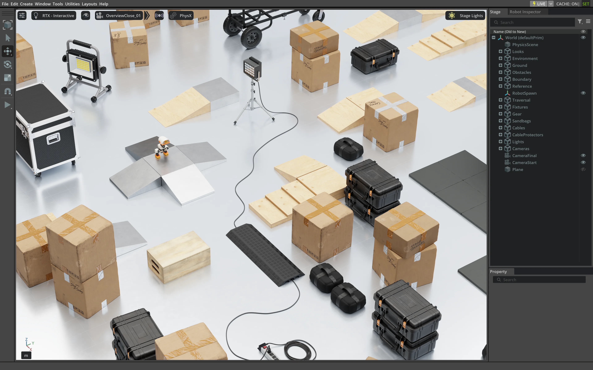
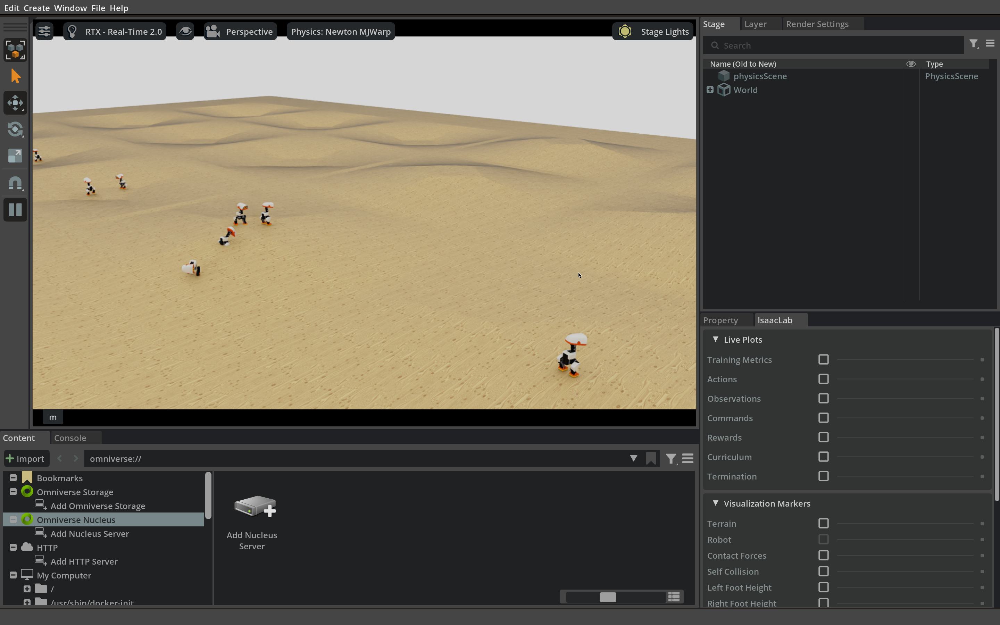
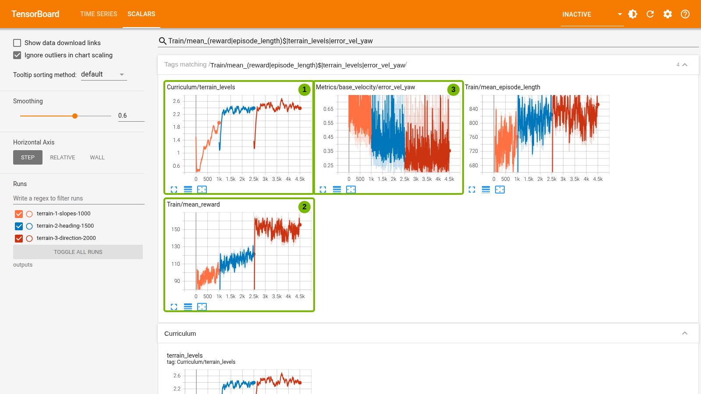
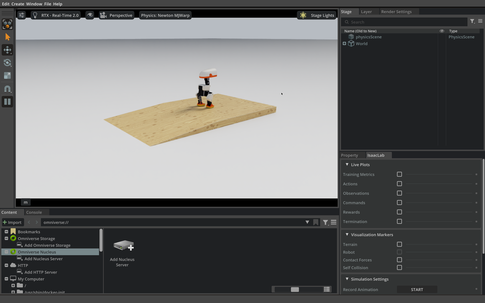

3.4 延伸：走稳上下坡#
平地训练已经把速度跟踪、稳定性和域随机化连在一起。遇到坡道时，这些要求还够不够？本节从成功判据出发设计奖励，在随机坡面上训练，再到固定楔形坡台验证。
NVIDIA 的 Microduck 实践博客也训练了包含斜坡、台阶和不平整地面的行走策略，并将其部署到真机。可以对照阅读，了解这里的坡地练习怎样连接到更完整的 sim2real 流程。
2026 GTC 柏林的演讲#
在 2026 年 GTC 柏林的演讲中，Microduck 要穿过由坡台、平台和道具组成的障碍场地。


NVIDIA 技术博客中的 Microduck 障碍场地。图片来源：NVIDIA 技术博客，图 6 ↗。
本节只取其中最简单的任务：走上木质楔形坡台并站稳，再走下来。怎样把“到达、站稳、不跌倒”变成策略能学习的反馈？先设计奖励，再训练和验证。
任务与奖励设计#
奖励是每一步的训练反馈，PPO 用累计奖励调整策略（见 3.2 节）；成功判据则在评测时判断任务是否完成。前者引导学习，后者检验结果。
只在成功时给分，反馈可能太稀疏；只奖励站直，策略又可能停着不走。设计奖励，就是把任务拆成可学习的信号，并用权重平衡前进、稳定和平滑。
下面六步不依赖具体机器人，3.5 节读社区技能时也会用到：
先写验收。 明确目标、时限和失败条件，并固定评测方法。
列出可用量。 注明坐标系、单位和来源；奖励可读仿真真值，策略输入必须能在部署时获取。
选择形状。 跟踪目标用有界奖励，抑制偏差用惩罚，单次事件只计一次分。
确定尺度。 核对权重正负、归一化尺度和门控，并比较各项的实际贡献。
检查漏洞。 不完成任务能否拿高分？提前终止会不会让策略少受惩罚（每步大多是惩罚时，早摔倒反而“少扣分”）？
独立验证。 按成功判据评测，最好另留没有参与调参的种子和场景；想知道某一项的作用，要在同一起点、同等预算、配对种子下只移除这一项再训练比较。
变量含义
- \(w_i\)
- 第 \(i\) 个奖励项的权重。正权重表示“越大越好”，负权重表示惩罚。
- \(g_i\)
- 门控，取 0 到 1：决定这一项在当前状态下是否生效，例如只在收到推进指令时才奖励前进。
- \(\phi\)
- 形状函数：把归一化误差变成奖励值，例如跟踪核 \(\exp(-z^2)\) 或平方惩罚 \(z^2\)。
- \(e_i\)
- 这一项要衡量的误差或物理量，带单位，例如速度误差（m/s）。
- \(\sigma_i\)
- 尺度，与 \(e_i\) 同单位：多大的误差算“明显”。除以它之后误差变成无量纲数。
形状 \(\htmlData{sym=phi}{\phi}(\htmlData{sym=z_norm}{z})\) |
权重 |
适合 |
需要注意 |
|---|---|---|---|
跟踪核 \(\htmlData{sym=exp}{\exp}(-\htmlData{sym=z_norm}{z}^2)\) |
正 |
让速度、姿态等接近目标 |
取值在 0–1 之间；尺度太小几乎总是 0，太大则好坏难分 |
平方惩罚 \(\htmlData{sym=z_norm}{z}^2\) |
负 |
侧滑、动作变化等越小越好的量 |
没有上界，个别异常值会主导总奖励 |
截断的进展 |
正 |
奖励前进，又不鼓励无限加速 |
只看速度大小，不检查方向是否朝向目标 |
一次性事件 |
正或负 |
起跳、着地、到达、失败 |
要防止同一事件被反复触发 |
实际代码的写法各不相同，但通常都能拆成“读取什么量、怎样归一化、何时生效、权重多大”。
本节的验收。 白色平地上放着一个有限大小的木质楔形坡台：两侧是实心侧面，前面是斜坡，顶上是 0.6 m 宽的平台。同一个坡台测试两个方向：
上坡：从坡脚前的地面出发。机身越过坡顶 0.15 m、两只脚都踏上平台（离坡顶边缘至少 0.06 m）时算到达；之后留在平台上保持直立至少 2 秒并持续到回合结束，不跌倒、不从边缘掉下，才算通过。
下坡：从平台上出发。机身越过坡脚 0.25 m、两只脚都踏上坡脚之外的地面时算到达；之后在地面上保持直立至少 2 秒并持续到回合结束，才算通过。
到达后前进指令随即停止，这样“按指令继续往前走、从平台另一侧掉下去”不会被算成策略的失败。和 3.3 节一样，每只小鸭子先锁住关节在出发位置落稳，策略第一次输出后再松开。
验证命令会先创建白色平地，再添加带碰撞的木纹楔形坡台，摩擦设置沿用原配置。上坡时从坡脚前出发，下坡时从平台朝坡脚出发。
先测基线。 官方行走策略只在平地上训练过。在这个坡台上，它上坡时在斜坡前部偏向一侧，最后摔倒；下坡时走到斜坡上就停住，20 秒内既没有到达，也没有摔倒。两种失败都不是“走不动”：上坡失去方向和平衡，下坡停滞不前。所以报告要把到达、跌倒和停滞分开记录，只看“是否摔倒”会漏掉下坡的停滞。
坡面改变了脚与地面的相对高度、重力沿坡面的分量和可用摩擦：10° 坡道上，沿坡向下的重力约为体重的 17%，上坡需要更多推进，下坡更需要控制速度。我们不手写上坡步态，而是让训练场景和奖励覆盖这些变化；Newton 在每个物理步计算重力、接触和执行器响应，Isaac Lab 让同一策略在大量坡面上并行试验。
随机坡面训练：在训练分布中练习#
3.3 节的域随机化改变摩擦、质量和延迟等物理参数；地形随机化把“地面形状”也加入随机抽样。训练地形混合了平地和各种坡度的上坡、下坡。Isaac Lab 的地形课程（curriculum）按表现逐步调整坡度：走得好的环境移到更陡的坡面，走不好的退回较缓处，TensorBoard 中的 Curriculum/terrain_levels 记录平均难度等级。
这些随机坡面是训练分布：策略在其中练习上坡、下坡和在坡面上保持平衡。后面验证用的固定楔形坡台（一段斜坡接一块平台）这一完整布局没有出现在训练地形中，所以坡台上的结果是在单独的验证场景中检验这些能力，而不是在训练场景里打分。
训练不从零开始：复制官方 ONNX 的网络权重与归一化参数作为新策略的起点，价值网络与优化器重新初始化。训练前先核对新策略网络与原 ONNX 对同一观测的输出一致，避免把接口错误误认为“需要更多训练”。
左右滑动查看完整图示
1写下验收
训练开始前固定判据：到达、保持、跌倒分开记录，上坡和下坡分别报告。
2随机坡面训练
并行环境在随机坡面上采样，地形课程按表现调整难度；保留的平地样本让平地能力继续得到练习。
3楔形坡台验证
楔形坡台的完整布局不在随机训练地形中；新旧策略用同一坡台、同一判据比较。更严格的独立测试还应另留没有参与调参的种子和布局。
在 1.2 节准备的课程容器终端里运行下面的命令（需要重新进入容器时，见 1.2 节），以 --model 指定的官方行走策略为起点，用 256 个环境继续训练 1000 轮；--show 打开 Isaac Sim，可以看到小鸭子分布在不同地块上同时练习。--output 请使用 outputs/ 下尚不存在的新目录。
python3 scripts/run.py train-terrain \
--model models/walk.onnx \
--num-envs 256 --iterations 1000 \
--show \
--output outputs/terrain-training-01
参数详解
--model：用官方models/walk.onnx初始化行走 Actor；不是随机初始化。--num-envs 256：并行训练 256 个环境。--iterations 1000：进行 1,000 轮 PPO 采样与更新。--show：显示训练窗口。--output：保存新检查点、配置、日志及训练完成后的导出模型。


--show 打开的坡地步行训练窗口，展示训练刚开始的样子。画面里是随机生成的训练地形，不是后面验证用的楔形坡台。
观察一会儿就可以按 Ctrl+C 停止。训练每 250 轮保存一次检查点并导出一份可测试的策略（例如 export-model_250/policy.onnx），跑完 1000 轮后才生成 outputs/terrain-training-01/exported/policy.onnx。后面的验证默认使用课程提供的坡地模型，不需要等您的训练完成。
这条命令不等于课程模型的训练过程。 固定模型 models/terrain-walk.onnx 来自三个连续阶段：1000 轮（与上面的命令设置相同，DGX Spark 上不开窗口约 8 分钟），续训 1500 轮（加强角速度跟踪、固定名义物理参数），再续训 2000 轮（加入下一部分的转向奖励）。而且那次训练使用的接触配置与当前命令的全身碰撞模型不同。所以您的 1000 轮是一次新实验，不能期望复现固定模型的成绩。


固定坡地模型三个训练阶段的 TensorBoard 记录（日志在 datasets/terrain-ppo/），横轴是累计迭代次数，绿框与编号为课程标注。① 地形难度等级在第一阶段从约 0.6 升到 2.0 左右，课程机制把表现好的环境移到了更陡的地块；② 每次续训开始时奖励设置改变，回报随之跳变，不同阶段的回报数值不能直接比较；③ 第三阶段加入转向奖励后，转向误差降到 0.25–0.35 rad/s 附近，波动较大。
用转向奖励减少走偏#
第三阶段之前的策略在 +5° 坡道上已经能迈步上坡，却会一边走一边慢慢转偏，偏离要到达的目标。前进速度奖励按机身坐标系计算，身体转偏后仍可能“向自己的前方走得很好”，所以第三阶段加入一项单独的 z 轴转向奖励：
变量含义
- \(r_{\omega}\)
- 转向跟踪奖励：误差为 0 时为 1，误差增大时平滑降向 0。
- \(\exp\)
- 指数函数：把平方误差转换成 0 到 1 之间的平滑奖励。
- \(\omega_z\)
- 机身坐标系中绕 \(z\) 轴的实际角速度，训练时从仿真状态读取（rad/s）；机身倾斜时，它不一定等同于世界坐标系的偏航角速度。
- \(\omega_z^*\)
- 转向指令要求的角速度（rad/s）；直行时为 0。
- \(\sigma\)
- 转向误差的容忍尺度，这里取 0.15 rad/s。
\(\htmlData{sym=omega_z}{\omega_z}\) 是机身绕 z 轴的实际角速度，\(\htmlData{sym=omega_cmd}{\omega_z^*}\) 是转向指令，直行时为 0。误差为 0 时奖励为 1；误差达到 \(\htmlData{sym=sigma}{\sigma}\) = 0.15 rad/s 时降到 0.37，达到 0.30 rad/s 时只剩 0.02。只取 z 分量，是因为行走本身伴随横滚和俯仰的晃动，三轴一起放进窄的跟踪核会压低正常步态的得分。
1奖励函数入口
一次为所有并行环境计算；文档字符串说明它不评价步态中的横滚和俯仰。
def yaw_rate_tracking(env, std=0.15):
"""Reward turning accuracy independently of gait roll and pitch motion."""
import torch2读取实际与目标转向速度
读取机身坐标系的角速度，以及速度指令中的转向分量（第 3 列）。
velocity = env.scene["robot"].data.root_link_ang_vel_b
velocity = getattr(velocity, "torch", velocity)
target = env.command_manager.get_command("base_velocity")[:, 2]3计算有界奖励
只取角速度的 z 分量，减去指令后除以 std，平方再取负指数，对应上面的公式。
return torch.exp(-((velocity[:, 2] - target) / std).square())训练时这一项以权重 4.0 加入奖励管理器；同一阶段还把原三轴角速度项的权重降到 0.5、线速度项设为 3.0。
它约束转向速度，不纠正已累积的航向偏差。 原地不转也能得满分，因此还要配合前进、姿态和平滑等奖励。
最终模型通过了后面的坡台测试。但这一阶段同时改了多个权重并增加训练，无法单独确认转向奖励的贡献；可以按第 6 步设计对照实验。
在同一个楔形坡台上比较#
比较新旧策略时，坡台、判据和起点设置都相同。下面两段对比录像各是一次单独运行，按仿真时间同步播放。
上坡 +5°（截取前 15 秒）：官方行走策略（上）在坡道前部偏向一侧，约 12.1 秒摔倒；坡地策略（下）约 8.9 秒走上平台，之后一直站在平台上。
下坡 −5°（20 秒）：官方行走策略（上）停在斜坡上，既没有到达也没有摔倒；坡地策略（下）约 8.3 秒走下坡台，之后在地面上站稳。
在容器内运行下面的命令，默认加载课程提供的坡地模型。完成自己的训练后，把 --model 换成 outputs/terrain-training-01/exported/policy.onnx，换一个输出目录再运行。5 个环境在同一个坡台上互不碰撞地运行，窗口只显示第 1 个。
python3 scripts/run.py terrain \
--model models/terrain-walk.onnx \
--slope 5 --num-envs 5 --seconds 20 --seed 49001 \
--output outputs/terrain-evaluation-up-05
参数详解
--model：测试课程提供的models/terrain-walk.onnx。--slope 5：坡度为 +5°；下坡改为-5。--num-envs 5：运行 5 个互不碰撞的环境。--seconds 20：每个环境运行 20 秒仿真时间。--seed 49001：固定随机种子。--output：保存本次报告，使用新目录。


坡台测试窗口：小鸭子已经走上平台、在目标位置停住。观察它到达后是否保持直立，有没有从平台边缘掉下。
终端会打印每个环境的 passed、fell、reached_goal、held_seconds 和速度均方根误差，完整结果写在输出目录的 report.json。下坡把 --slope 改成 -5、换一个输出目录即可。课程按这两条命令实测，时间从策略接管算起（前 2 秒站立）：
方向 |
通过 |
跌倒 |
到达目标 |
到达后保持 |
行进中速度 RMSE |
|---|---|---|---|---|---|
上坡 +5° |
5/5 |
0/5 |
8.9–9.0 秒 |
11.0–11.1 秒，到第 20 秒仍在平台上 |
约 0.11 m/s |
下坡 −5° |
5/5 |
0/5 |
8.2–8.3 秒 |
11.7–11.8 秒，到第 20 秒仍站在地面上 |
约 0.09 m/s |
读这张表时注意三点：
只是 ±5°、每个方向 5 个环境。 它描述的是测过的这组条件，不是一般的成功率，也不是独立的留出测试。更陡的坡度要单独测量，可以依次把
--slope改成 ±10、±15。每个环境的结果见评测摘要 ↗。站立时有课程的头部保持。 这个策略在速度指令为 0 时（出发前 2 秒与到达之后）会把头压得很低。验证脚本只在这两段时间把 4 个头部舵机的目标换成站姿角度（俯仰再抬高 0.2 rad），腿部动作始终来自策略。所以“到达后保持”是策略和这个头部保持一起做到的。
只用于本节。 2.1 节和第 4、5 部分仍使用原行走策略。自己训练的模型要在相同条件下同时报告平地、上坡和下坡，坡地改善却丢失平地能力不算合格替代。
检查理解
训练地形里已经有很多坡，为什么还要在楔形坡台上单独验证？
查看解析
随机坡面是训练分布，楔形坡台这一完整布局没有出现在训练地形中，验证的是在随机坡面上学到的能力能否用到这个具体布局上，而不是在训练场景里重复动作。新旧策略要在同一坡台、同一判据下比较；如果根据验证结果反复调参，它就不再是独立测试，更严格的做法是另留没有参与调参的种子和布局。
小结#
奖励是训练信号，成功判据是验收；两者分开写，先写验收。
随机坡面是训练分布，固定楔形坡台是单独的验证场景；结论来自后者，而且只适用于测过的条件。
固定坡地模型在 ±5° 坡台上各 5/5 通过（每个方向 5 个环境）。转向奖励约束转向速度，不纠正已累积的航向；没有对照实验，不能把通过归功于它或其他某项调整。
回报曲线不能代替验收：训练回报上升，只说明策略更会拿这组奖励的分数。
3.5 节阅读社区作者为单脚站立和篮球平衡写的奖励代码，用同样的六步判断它们的目标、写法和局限。